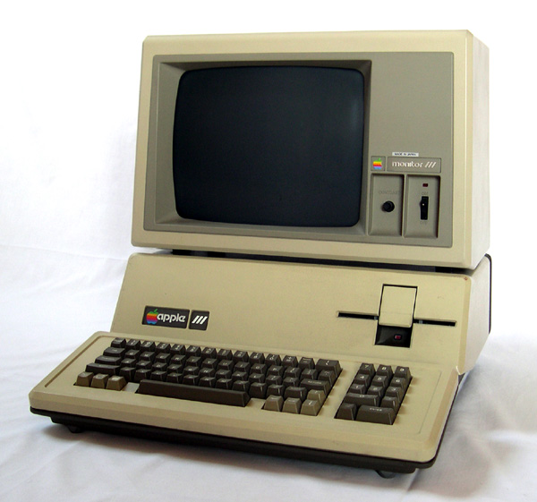
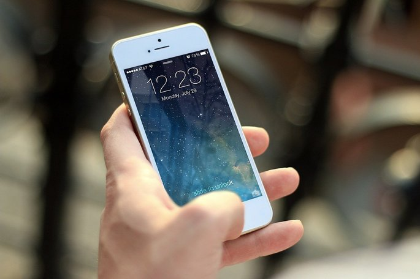

A quinta geração de computadores
IA
 Inteligência Artificial (IA) é um ramo da ciência da computação que se propõe a elaborar dispositivos que simulem a capacidade humana de raciocinar, perceber, tomar decisões e resolver problemas, enfim, a capacidade de ser inteligente.
Inteligência Artificial (IA) é um ramo da ciência da computação que se propõe a elaborar dispositivos que simulem a capacidade humana de raciocinar, perceber, tomar decisões e resolver problemas, enfim, a capacidade de ser inteligente.
Existente há décadas, esta área da ciência é grandemente impulsionada com o rápido desenvolvimento da informática e da computação, permitindo que novos elementos sejam rapidamente agregados à IA.
Iniciada dos anos 1940, a pesquisa em torno desta incipiente ciência eram desenvolvidas apenas para procurar encontrar novas funcionalidades para o computador, ainda em projeto. Com o advento da Segunda Guerra Mundial, surgiu também a necessidade de desenvolver a tecnologia para impulsionar a indústria bélica.
Com o passar do tempo, surgem várias linhas de estudo da IA, uma delas é a biológica, que estuda o desenvolvimento de conceitos que pretendiam imitar as redes neurais humanas. Na verdade, é nos anos 60 em que esta ciência recebe a alcunha de Inteligência Artificial e os pesquisadores da linha biológica acreditavam ser possível máquinas realizarem tarefas humanas complexas, como raciocinar.
Depois de um período negro, os estudos sobre redes neurais volta à tona nos anos 1980, mas é nos anos de 1990 que ela tem um grande impulso, consolidando-a verdadeiramente como a base dos estudos da IA.
Após esse longo período, hoje já temos um grande avanço da IA. Vivemos em uma era na qual ela já está inserida em nosso meio sem que percebamos – utilizamos essa tecnologia e aprendemos com ela diariamente.
A inteligência artificial está em nossas rotinas diárias, nas corporações, na otimização de processos e em sistemas de segurança, sendo reconhecida na saúde e principalmente em atendimentos. Um bom exemplo dessa participação são as assistentes pessoais como a Siri da Apple, a Cortana da Microsoft, entre outras, presentes no nosso cotidiano.
Temos um contato direto por meio de smartphones e computadores. De forma desafiadora, a inteligência artificial se expandiu e fez com que os algoritmos pudessem aprender e pensar de maneira diferente que os seres humanos.
Por meio de Machine Learning, a IA criou aplicações de forma automática. Dando acesso aos algoritmos e partindo deles, as máquinas desenvolvem sem intervenção humana, relacionado também ao Deep Learning que parte de uma grande quantidade de dados, gerando pensamento e linguagem de um ser humano.
Os computadores

Na quinta geração, os PCs emergem como os PCs que conhecemos hoje, com o seu primeiro PC sendo lançado pela IBM em 1981 e tinha uma configuração bastante modesta, com apenas 64 KB de memória, dois drives de disquetes de 5¼, um monitor MDA somente texto (existia a opção de comprar um monitor CGA) e sem disco rígido. 13 O preço também era salgado.
A Apple havia lançado o Apple III poucos meses antes do PC. Os dois equipamentos bateram de frente, pois disputavam o mesmo mercado e Apple III acabou levando a pior, apesar da sua configuração não ficar devendo à do PC e o preço dos dois ser quase o mesmo. O Apple III vinha com 128 ou 256 KB de memória, dependendo da versão, um processador Synertek 6502A de 2 MHz e drive de disquetes de 5¼.
O grande pecado foi o uso de um barramento de expansão proprietário, o que limitou as possibilidades de upgrade aos acessórios oferecidos pela própria Apple, uma característica que acabou sendo a grande responsável pela supremacia do PC.
Em 1984 já existia também a primeira versão do Windows, que era uma opção para os usuários de PCs interessados em rodar uma interface gráfica. Em 1991, tem o lançamento do computador com chip de alta velocidade desenvolvido pela Cal Tech, chamado “Touchstone Delta Supercomputer”, que executou 8,6 bilhões de cálculos por segundo.
É nessa geração que a concorrência internacional pelo domínio do mercado de computadores e tecnologia aparece, e os microcomputadores e supercomputadores atingem uma grande expansão.
Na década de 1990, surgiram laptops e notebooks, bem como os primeiros mini computadores, e no início dos anos 2000 o primeiro Smartphone apareceu no mercado. Nesta geração, os computadores podem realizar milhares de operações simultâneas, podendo executar um trilhão de operações por segundo. Os computadores têm maior velocidade, maior miniaturização dos elementos e um aumento considerável na capacidade de memória.
Além disso, outras tecnologias começaram a fazer parte do mercado, como holografia, fibras ópticas e biotecnologia. Nas mãos de grandes empresas como Apple, Dell, HP e Samsung, foram criados computadores capazes de executar mais de um milhão de operações aritméticas por segundo.
Os computadores de quinta geração contêm um grande número de microprocessadores que funcionam em paralelo, ou seja, são capazes de executar milhares de instruções diferentes simultaneamente. Isso permitiu que computadores e smartphones tivessem reconhecimento de voz e imagem.
Hoje, as máquinas são ativadas pela voz do usuário e podem responder a palavras que vêm de diferentes idiomas e dialetos, o que significa que, por um lado, as máquinas deixaram para trás o uso de idiomas especializados, aproximando-se cada vez mais da linguagem natural; e, por outro, eles têm a capacidade de traduzir entre idiomas e podem identificar vários idiomas.
Dispositivos mais importantes
- PIM: Um protótipo de hardware baseado na união de várias máquinas PSI conectadas em uma rede. Faz parte do projeto de inteligência artificial japonês. No final, são cinco máquinas desse tipo. Sua principal característica era o grupo de 256 elementos de processamento acoplados.
- Osborne 1: Primeiro microcomputador portátil a aparecer à venda em 1981 na West Coast Computer Fair, embora sem muito sucesso, dois anos depois. Com 13 kg, um OS CP / M, um teclado removível e uma pequena tela, parece muito inspirado no Xerox PARC, de 1976. Incluía duas portas, a IEEE-488 e a RS-232 ainda utilizáveis.
- Epson HX-20: Foi anunciado em 81 e lançado em 83. É de grande valor para os colecionadores porque, ao contrário do anterior, as suas características tornam-no muito mais funcional. Contava com processador duplo Hitachi 6301, impressora matriarcal, RAM expansível, microcassete para armazenamento de dados e display LCD.
- SLT Portátil Compaq / 286 1903: Impressionante por incluir uma tela bem maior que possibilitou trabalhar com muito mais conforto. Seu chip gráfico era superior, exibindo 9 x 14 caracteres e incluía um BIOS Compaq retro projetado e o famoso processador Intel 8088.
- Disquete: Uma ferramenta de armazenamento completamente obsoleta, mas que, curiosamente, forma o botão de backup em programas de computador. É uma sala quadrada removível na qual são armazenadas certas informações trabalhadas no computador.
O início do futuro

A Quinta Geração de Computadores é como designa o estágio de 1983 até o presente, tem como característica a simplificação e miniaturização do computador, além de melhor desempenho e maior capacidade de armazenamento. O marco nesta evolução, para chegarmos aos computadores como conhecemos hoje, foi a invenção dos sistemas operacionais, um exemplo é o Windows e o Linux. Estes sistemas permitem que vários programas
estejam rodando ao mesmo tempo, conferindo grande flexibilidade ao uso do computador. Por conta disso, os computadores começaram a se tornar mais baratos e mais acessíveis para as pessoas mais leigas, se tornando comum o seu uso no nosso dia a dia.
A quinta geração de computadores é portátil e se caracteriza pelo fato de que a entrada e saída de dados podem ser feitas a partir do hardware, mas também a partir do reconhecimento de voz ou facial.
Um exemplo de computadores de quinta geração são os smartphones, que possuem maior capacidade de armazenamento e velocidade do que um computador de quarta geração. Além disso, são pequenos, têm ligação à Internet e reconhecem a linguagem natural e as expressões faciais.